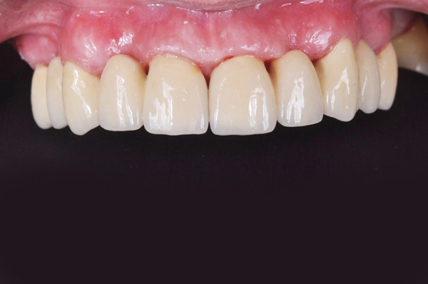
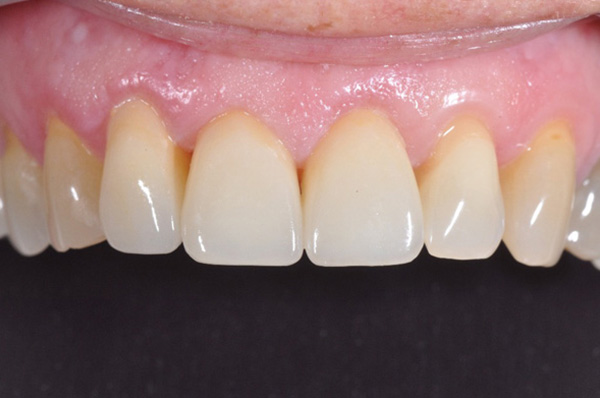

Celokeramicke mustky
Esteticke reseni s maximalni prirozenosti
Esteticke reseni s maximalni prirozenosti

Precizni zpracovani s perfektnim barevnym prechodem

Moderni technologie pro dlouhodoba reseni

Komfortni a esteticky zpracovane nahrad